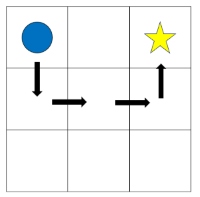
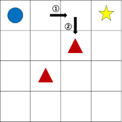
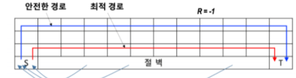
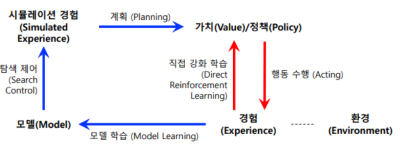
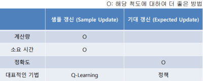
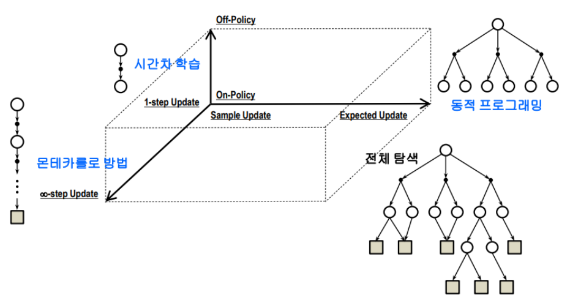

최적 가치함수
SARSA
일반화된 정책반복과 시간차 학습이 접목된 알고리즘
S: 상태,A: 행동,R: 보상,S+1: 다음 상태,A+1: 다음 행동
일반화된 정책 반복:- 정책 평가를 할때 정책향상을 위해 굳이 평가를 끝까지 해보지 않고 적정양의 정책평가만으로도 정책향상을 이룰 수 있다는 것
설명
- Q 함수, 행동가치(Q) 함수를 통해 학습, 즉 상태가치(V)를 사용하는게 아님
- 현재 상태(S)에서 행동(A)을 취한 후 보상(R)과 다음 상태(S+1)를 받고 에이전트가 다음 행동(A+1)을 무엇을 취할 것 인지를 알아야 한다.
- 다음 행동(A+1) 는 다음 상태(S+1)를 안다면 무엇인지 알 수 있다 이때 다음 상태를 선택하는 정책으로 𝜀-greedy 를 사용한다
𝜀-greedy (엡실론 그레디)
greedy: 기본적으로 가장 좋은것을 고르겠다는 의미

greedy:- 학습 초반에 행동가치 함수는 (Q) 는 보통 균등 분포될것
- 이 과정에서 우연하게 위와 같은 코스를 반복해서 간다면 현재 시작지점에서의 최대 행동가치는 위 사진처럼 아래로 한번 갔다가 가는 것일것이다
- 원래라면 오른쪽으로 이동 하는 게 가장 최적인데
𝜀(엡실론):𝜀은𝜀의 확률만큼 랜덤하게 움직이게 한다는 것이다- 이때 랜덤하게 움직이는것을 탐험
- 즉
𝜀-greedy는greedy하게 움직이되𝜀확률만큼 랜덤하게 움직이는 정책
Q-Learning
SARSA 와 유사한 시간차 기반 예측 알고리즘
- 기반은
SARSA - 현재 상태(S)에서는
𝜀-greedy정책을 통해 행동을 선택하고, 다음 상태(S+1)에서는 가장 큰 행동 가치 함수(Q)를 사용
Expected SARSA
행동 가치 추정 시 분산이 높다는
SARSA방식의 단점을 보완함
- Agent 는 정책에 따라 행동하므로 다음에 취할 행동들 확률이 얼마인지 미리 알지 못함
Expected SARSA는 다음 상태에 모든 행동들을 고려한다- 즉
SARSA는 다음 행동들중 하나만 샘플링 하지만,Expected SARSA는 모든 행동에 대해 샘플링 한다
On-policy & Off-policy
On-policy:SARSA처럼 행동하는 정책과 학습할 때 사용하는 정책이 서로 같은 경우
Off-policyQ-Learning처럼 행동하는 정책과 학습할 때 사용하는 정책이 서로 다른 경우
On-policy (SARSA)의 문제점

- 사진 처음 오른쪽으로 이동한 뒤 다음 행동으로 아래를 선택할 경우 당연히 안좋은 선택이므로 마이너스 점수 부여
- 그리고 다시 처음으로 와서 이번엔 바로 아래로 이동하는 행동을 취한 경우 이것도 안좋은 행동이므로 마이너스 점수 부여
- 그럼 최악에 경우에는 빠져 나오질 못하고 갇히는 현상이 발생함
Off-policy (Q-Learning)의 장점
- 위에 상황이
Q-Learning에서는 해당이 안된다 - 다음 행동을 결정할 때 가장 큰 행동 가치 함수(Q) 를 사용하기 때문에 잘못된 선택을 할 가능성이 없다
SARSA문제는𝜀-greedy에 의해 초반에 상태가치는 균등 분포 되기 때문에 아주 잘못된 선택이 가치가 살짝 더 높게 나와 해당 행동을 취할 가능성이 생겨 버리기 때문이다.- 반면
Q-Learning은 다음 선택을 재대로 하는 경우로 학습이 이루어진다. 또한 가장 큰 행동 가치 함수(Q) 가 계속 발전하기에 추후에 행동이 재평가 받기도 한다
On-policy (SARSA) 를 사용할 때
- 현재 정책 기준으로 학습을 진행하여 정책이 일관성 있게 유지된다는 장점이 존재
- 이로 인해, 매우 불안정 하거나 예측하기 힘든경우 Off-policy 보다 유리함
- 예를들어 예측할 수 없는 현실에 문제를 다룬다거나
종합

여기서
파란색=SARSA,빨간색=Q-Learning
SARSA&Expected SARSA는 좀 더 안전한 경로로 갈려는 경향이 있고Q-Learning은 최적적인 경로로 갈려는 경향이 있다.
모델 기반 학습
모델
분포 모델:- 모든 발생 가능한 상황에 대한 확률분포를 정확히 기술
샘플 모델:- 모든 발생 가능한 상황에 대해 임의의 가능성만 샘플링 됨
계획 & 학습
계획
주어진 목적을 달성하기 위해 수행해야 할 일에 대한 방법 마련
동적 프로그래밍,모델 기반 강화학습이 이에 해당- 이것을
Model-Based Algorithm이라고 함 - 모델 기반 강화학습은
Agent가 행동을 결정할 때 환경모델을 통한 결정이 이루어짐 - 즉 계획은 정확히 알려진 환경정보를 바탕으로 가능한 모든 행동을 고려하게 됨
모델이 어떻게 사용됨?
- Agent 가 환경과 상호작용이 일어난 경우
- 환경은 모델에서 정보를 받고 정책을 업데이트 하는 방식으로 이뤄짐
상태 공간 계획:- 상태 공간을 탐색할 때 방문하는 각 상태에 대한 가치 함수 추정이 이루어짐
- 가치 함수를 계산하기 위해 시뮬레이션에 의한 경험 데이터 기반으로 역갱신(backup) 과정 수행
학습
학습은 계획과 반대로
agent가 직접 경험을 통해 최적의 행동을 직접 배움
SARSA,Q-Learning등이 이에 해당- 이것을
Model-Free Algorithm이라고 함
온라인 계획
- 임의의 환경이 주어진 경우 아래 두 가지 과정을 동시에 지속적으로 수행
- 환경을 모방하는 모델 자체에 대한 학습
- 계획을 통한 가치 및 정책 학습
- 환경 상호작용 → 모델 변화 → 가치/정책 업데이트
Dyna-Q 알고리즘
온라인 계획및 강화학습이 동시에 수행되는 대표적 알고리즘 학습 속도를 높히고 효율적으로 환경을 탐색하기 위한

Model-Based Algorithm&Model-Free Algorithm의 접근법을 결합해서 실제 환경에서 얻은 데이터를 활용해 행동 가치 함수(Q) 를 업데이트 하고 환경 모델을 활용해 가상의 경험을 생성하고 학습에 활용함- 배치 학습 하는것과 비슷한 점이 있다
직접 강화학습 & 간접 강화 학습
간접 (Q-Planning):- 환경과 상호작용에 의한 경험 정보가 적더라도 그런 정보를 반복적으로 사용
- 모델 학습이 충분히 되지 않는다면 편향(bias)가 있을 수 있음
직접 (Q-Learning):- 환경과 직접 상호작용 하며 얻는 경험을 곧바로 활용해 정책에 반영하여 편향(bias)를 줄일 수 있음
초기 탐색 방법
- 탐험적 시작
- 행위 정책으로
𝜀-greedy사용
장점
- 더 적은 에피소드로 경험이 높은 학습성과 효율을 보임
갱신 & 샘플링
기대 갱신 & 샘플 갱신

기대 갱신:- 발생 할 수 있는 모든 가능한 상황을 고려하는 가치 갱신
샘플 갱신:- 발생 할 수 있는 간단한 샘플만 활용한 가치갱신
샘플링
궤적 샘플링:- 환경 또는 환경 모델과 지속적으로 상호작용 하면서 상태와 보상을 얻어오는것
균등분포 샘플링:- 샘플링 대상 후보들을 어떤 편중 없이 임의로 선택
On-policy 분포 샘플링:- 현재 주어진 정책 기반으로 각 상태에서 행동 선택
효과:- 실제 일어날 법한 상황에 좀 더 집중
정리

- 대부분의 강화학습은 환경 또는 환경모델로 부터 얻는 궤적에 따라 가치들을 역 갱신
- 대부분의 강화학습 방법은 정책 반복에 일반화 전략을 따름
중간 고사 내용
몬테카를로: 타입 스텝 사이에서는 정책 개선 불가, 부트스트랩 사용안함모든 방문 MC 예측- 매번 방문할 때 마다 모든 보상의 합 평균
첫 방문 MC 예측- 동일 에피소드 내 처음 방문했을 때에만 그 이후 모든 보상들의 합 평균
탐험적 시작- 위 두 방법에서 방문하지 못한 에피소드 환경이 발생 하는데 이걸 극복하기위해
- 초기 상태를 임의로 시작
시간차 학습 (TD): 에피소드 완료를 기다리지 않고 타임 스텝별로 모델 갱신, 부트스트랩 사용역 갱신 다이어그램:- 종료 상태를 만나면 해당 종료 상태로부터 역 방향으로 생성 되면서 얻은 여러 누적 보상을 평균하여 상태(s) 의 가치를 갱신